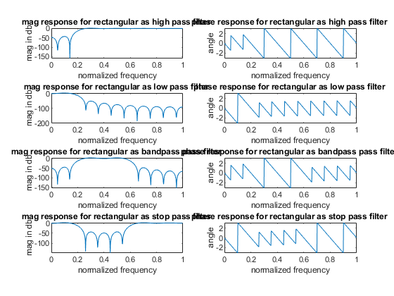
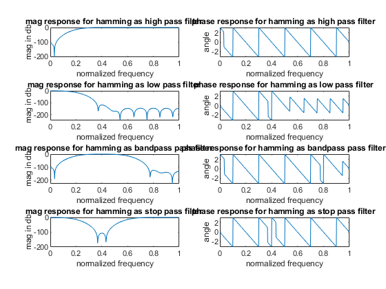
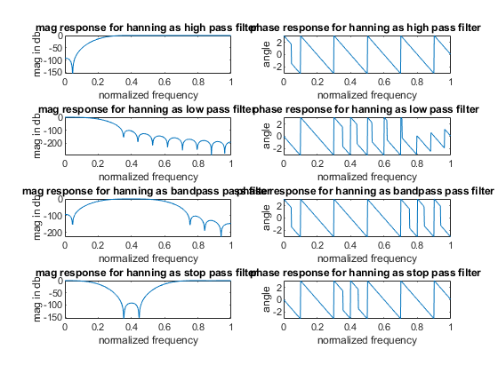
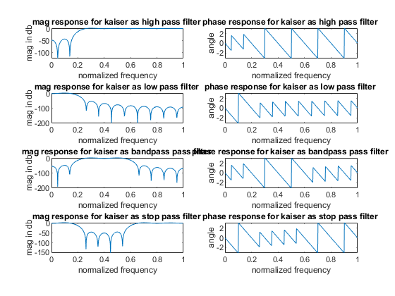

clc;
clear;
close all;
n = 20;
fp = 200;
fs = 600;
f = 2000;
wp = 2*(fp/f);
ws = 2*(fs/f);
window_1 = boxcar(n+1);
window_2 = hamming(n+1);
window_3 = hanning(n+1);
window_4 = kaiser(n+1);
y = [window_1 ,window_2 ,window_3 ,window_4];
name = ["rectangular","hamming","hanning","kaiser"];
for i = 1:4
window = y(1:n+1,i);
t = ["high","low","bandpass","stop"];
for x = 1:length(t)
if x < 3
wn = wp;
else
wn = [wp,ws];
end
b = fir1(n,wn,t(x),window);
[H,w] = freqz(b,1);
figure (i)
subplot(4,2,2*x-1)
plot(w/pi,20*log(abs(H)));
xlabel('normalized frequency');
ylabel('mag in db');
title ('mag response for ' + name(i) + ' as '+ t(x) +' pass filter ');
subplot(4,2,2*x)
plot(w/pi,angle(H));
xlabel('normalized frequency');
ylabel('angle');
title ('phase response for ' + name(i) +' as '+ t(x) +' pass filter ');
end
end
   